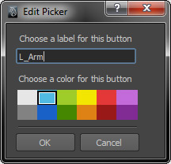
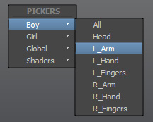
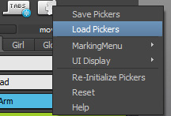
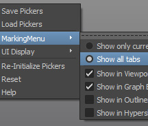
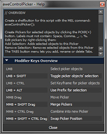

aweControlPicker is a minimalistic, clean and versatile GUI Picker for Maya that works with any rig. Sporting a slick interface, easy Picker organisation, no-hassle access to important functions and unique features such as the built-in MarkingMenu, this script will take your workflow to a whole new level of awesomeness!
'Awesome' A.D.
Overview
 aweControlPicker is a GUI Picker tool for Autodesk Maya that enables animators to define a bunch of buttons to select
specific objects (e.g. controllers) in their scene.
It works much like Character Selection GUIs you've most likely used before, except it's designed to be as minimalistic as
possible, can be edited on the fly, works with any rig and provides ease of access to maximize the speed of your workflow.
aweControlPicker is a GUI Picker tool for Autodesk Maya that enables animators to define a bunch of buttons to select
specific objects (e.g. controllers) in their scene.
It works much like Character Selection GUIs you've most likely used before, except it's designed to be as minimalistic as
possible, can be edited on the fly, works with any rig and provides ease of access to maximize the speed of your workflow.
The main functionality is quite simple: you select one or more objects, add a Picker for the current selection and voilà!
Pickers can be labelled, configured to display in one of 12 colors, organized into tabs you create and re-ordered at
will. All Pickers and tabs, as well as their order of appearance, are stored with the scene and will be automatically loaded
whenever you run the script. Additionally, you can save your Picker configuration out to a file, which can then be
loaded back into Maya to restore your configuration.
The script works by creating an objectSet for each Picker. This Set will hold any objects associated with that Picker, enabling the script to work with arbitrary rigs and allowing you the flexibility to rename or reparent associated objects without having to worry about breaking the respective Picker's functionality.
The following document provides an extensive overview of the script's functionality and explanations for its usage. You are encouraged to take a gander, though the daredevils among you may opt to simply ignore my efforts and not RTFM. Suit yourself.
Special thanks to my personal Lab-Rat aka Alpha-Tester David Nilsson for his valuable input throughout the development of this script.
Features
- Create GUI Pickers for arbitrary object collections
- Slick, clean, minimalistic and customizable interface
- Freely edit position and appearance of Pickers
- Organize Pickers into Tabs
- Pickers can select and also set keys on objects
- Pickers change functionality when shift, ctrl and alt modifiers are used
- GUI Window is dockable, remembers size and position between sessions
- Automated alternate Prefix matching (Prefix, Hierarchy, Namespace)
- Stores Pickers with scene
- Works automatically with imported and referenced scenes (that contain Pickers)
- Unique MarkingMenu to access Pickers from the Viewport, Graph Editor and other panels
- Save and Load Picker GUI for easy transfer and sharing
- Written entirely in MEL and cleanly formatted in anticipation of your eager perusal
- Over 700 800 lines of comments for easy user modification and extendability
Usage and distribution license
- You are free copy, modify and extend this script to suit your own needs or to add features.
- You may also distribute this script freely, providing that
- you do not charge any fee or monetize it in any way
- you ensure the completeness of the package (i.e. include all necessary images, etc.)
- If you modify and/or distribute this script, I ask that
- you provide proper credit and a link back to this site
- you notify me of changes you made so I can marvel at your efforts
- you go to the greatest lengths possible to ensure your modified code does not contain any bugs
Important information
Do not tamper with the objectSets!
As mentioned, the script relies heavily (heck, exclusively!) on the use of objectSets to perform its duties. Internally, all Tabs and Pickers are represented by objectSets. Since there is no way to 'hide' objectSets and thus prevent their exposure within the DAG, they are susceptible to modification via the User (yes, that's you!). Therefore, I'm obliged to give you this warning.
Any objectSet starting with (namespace:)aweCP_ is managed and used by the script. If you really, really need to you can group these sets into their own set, but bear in mind that doing so will create more clutter in the case that you reference such a scene into another scene.
Changelog
N new f fixed u update r removed d documentation
1.0.4
- F A bug caused Maya to crash when trying to start the script on OSX. This has finally been fixed. (Big thanks to Lee Gramling for pointing out the cause!)
Hotfix 1.0.3.5
- F Renaming a tab to an empty string caused Maya to crash. This has been fixed so that doing so simply cancels the dialog with an error message.
- F In Maya 2013, the fileDialog command has undergone a subtle change, causing it to no longer properly recognize the right file extension (.cpf) when using the 'Save' and 'Load' dialogs. This has been fixed (Thanks Ümit for reporting the bugs)
1.0.3
- F The implementation of a sceneEvent that doesn't exist in versions prior to Maya 2012 caused an error for users on Maya 2011. Those users must now manually trigger the Re-Initialize command after importing or referencing scenes with Pickers in order to update the Picker list.
- N There is now a setting to define how the 'Set Key' function behaves when ctrl-clicking a Picker (Key all objects, Key animated objects, Key animated channels only). Make sure to read how these settings affect your workflow.
- U Rewrote the CPClick command (formerly CPSelect) to account for the added option described above and restructured the code in the process.
- u Made a maintainence pass on the code, cleaning and streamlining the procedure comments (the description now also informs of functions each procedure depends on).
- d The documentation has been updated to reflect the changes to the script. Additionally, I've added an FAQ section to deal with the most common issues that may arise.
- r This documentation is no longer downloadable as an offline file due to the maintenance overhead. This site can still be reached by going to
 Help and clicking the 'View Online Documentation' button.
Help and clicking the 'View Online Documentation' button.
- f The Marking Menu implementation had a bug that caused the wrong Pickers to be displayed and/or the wrong objects to be selected under certain tab configurations.
1.0.2
- f An incompatability issue between OSX and Windows caused the implementation of the Picker drag 'n drop behaviour to be faulty on OSX systems. The code was modified to work around the problem. (Thanks Chris Zurbrigg for helping out)
- f A bug caused the UI to not display or be properly populated after closing the UI window and subsequently running aweControlPicker() to reactivate it. (Thanks Leandro for the heads-up)
- u The Reset command now offers the option to Reset only Pickers, only UI, or both.
- n In addition to remembering its size and whether it was docked or floating, the UI window will now also remember its position between sessions, provided it was floating when Maya was closed.
- n aweCPDockWindow() command.
Docks the UI and makes it visible/raises it to the top of the stack. Implemented to avoid the issue of users 'losing' their UI if it was moved into screenspace that became non-existent between sessions. This command is not accessible via the UI and has to be executed manually instead.
1.0.1
- f A silly bug prevented the script from being run at all on OSX, due to differences in the line-ending format on the platform the script was written in (Windows: CR/LF). I modified the code to avoid having to use such nefarious techniques. (Thanks Eduardo for bringing this to my attention)
- f An error in the implementation of the MovePicker() command caused some Pickers to reappear in the wrong tab under the wrong circumstances. (Merci Tom for noticing the bug)
- n There is now an option to hilight Pickers when objects that are associated with them
are selected. This makes it easy to see what Pickers an object belongs to. This option is enabled by default
and can be toggled via UI Display
 Hilite Pickers .
Hilite Pickers .
Note: This feature is still 'experimental'. Toggle it off if you encounter issues or don't like the effect. More information can be found in the Options section
Installation
Installing the script is very easy. Just follow these short steps and you'll be up and running in no time.
1Copy the script file aweControlPicker.mel to your scripts directory.
On Windows, this is located under
C:\Username\Documents\maya\201x\scripts.
You can determine the location of your scripts directory from within Maya by executing the following MEL command:
internalVar -usd;
2
Copy the PNG images to your icons directory.
Again, under Windows, this is located under
C:\Username\Documents\maya\201x\prefs\icons.
You can determine your icons directory by executing the following command:
internalVar -ubd;
3 Now all that needs to be done is initialize the script; do this the first time you install the script and whenever you update the file in the future. Start Maya if it wasn't already running and execute the following MEL command:
source "aweControlPicker.mel";
4 To start using the script, you execute the following command (I recommend creating a shelfbutton for convenience):
aweControlPicker;
Finally, I've supplied an image called aweControlPicker.png
 that you can use as an icon for your shelfbutton (or not, I mean, that's like, uh, totally up to you).
that you can use as an icon for your shelfbutton (or not, I mean, that's like, uh, totally up to you).
That's it! Enoy using the script!
Oh, by the way, there are instructions on setting up the awesome aweControlPicker MarkingMenu of Awesomeness
which you can find here, but don't get ahead of yourself!
Using the Script
This section explains how to use the script and what the main functions are. While I designed the UI to be as intuitive as possible, it may be helpful to read up on what's possible with it (would you have guessed that you can drag Pickers around and merge them?)
Creating, editing and deleting pickers

To add a Picker button, first select one or more objects, then hit the
button (If nothing is selected, that button will be disabled, since you can't explicitly create "empty" buttons).
You will be prompted to add a label for your button and set its color. The resulting Picker will be
added to the bottom of the currently active tab.
You can add as many Pickers per tab as you like (well, up to 999, but... why?).
Right-clicking a Picker displays a Popup Menu that allows you to edit a Picker in the following ways:
- Add Selection Adds currently selected objects to this Picker's objectlist.
- Remove Selection Removes currently selected objects from this Picker's objectlist.

- Edit Picker Edit the Picker's label and/or color.
- Clear Objects Removes all objects from this Picker, making it 'empty'.
- Delete Deletes this Picker (this is not officially undoable!).
Note:
The script doesn't distinguish, nor does it care, what type of object you add to the
selection list of a Picker. As long as it's a valid DAG object, you can create a Picker for
it. This makes the script useful not only for selecting animation controls, but virtually
any other node you want quick access to, e.g. shaders, constraints, geometry, polygon unicorns, etc.
Picker functions and key modifiers
To select objects associated with a particular Picker, simply click it (Yes, it's that easy!).
Just like the viewport, holding down  while
clicking a Picker will toggle the associated objects' selected state. You can use this modifier to quickly
make 'interim' selection groups, for example by quickly 'subtracting' (toggling) the left wrist from the whole arm group, etc.
while
clicking a Picker will toggle the associated objects' selected state. You can use this modifier to quickly
make 'interim' selection groups, for example by quickly 'subtracting' (toggling) the left wrist from the whole arm group, etc.
If you hold  while clicking a Picker, the script
will attempt to apply the Prefix entered in the Prefix Editor on the objects
associated with that Picker and select the prefixed objects instead. See the
Prefixes section below to find out more about how prefixing works in this script.
while clicking a Picker, the script
will attempt to apply the Prefix entered in the Prefix Editor on the objects
associated with that Picker and select the prefixed objects instead. See the
Prefixes section below to find out more about how prefixing works in this script.
Hold and click to quickly set a Key on all objects associated with a Picker at the current frame. Read about Key Settings to understand how you can modify this function.
Manipulating Pickers
Pickers can be manipulated in a variety of ways by using the middle-mouse button and dragging them onto other Pickers:
To move a Picker to a new position in the list, simply middle-mouse
drag ( )
it onto another Picker. Let go on the upper half of a Picker to insert the dragged Picker before,
or on the lower half to insert after it.
)
it onto another Picker. Let go on the upper half of a Picker to insert the dragged Picker before,
or on the lower half to insert after it.
If you wish to merge the selection list of two buttons, hold down
 and middle-mouse drag
(
and middle-mouse drag
( ) Picker A on to Picker B. Picker A will
be deleted (!) and Picker B will now additionally select the objects formerly associated with Picker A.
) Picker A on to Picker B. Picker A will
be deleted (!) and Picker B will now additionally select the objects formerly associated with Picker A.
If you wish to create a new Picker combining the selection lists of two other
Pickers, hold down and middle-mouse
drag ( )
one Picker on to the other. A new Picker is created and the original Pickers are preserved (at least until the polygon unicorn gets hungry...).
)
one Picker on to the other. A new Picker is created and the original Pickers are preserved (at least until the polygon unicorn gets hungry...).
Hotkey Summary
| Mousebutton / Key Combo | Function |
|---|---|
|
|
Select Picker objects |
|
|
Toggle Picker object's selection |
|
|
Set Key on Picker objects |
|
|
Use Prefix (works with Ctrl or Shift) |
|
|
Move Picker |
|
|
Merge Pickers |
|
|
Combine Pickers |
| left right left left up right down down left up | Summon Polygon Unicorn to animate for you for 15 minutes |
Tabs
 The script offers you the ability to organize Pickers into Tabs.
The script offers you the ability to organize Pickers into Tabs.
You can create and delete Tabs
via the button at the top of the UI, but
note that there must always be at least one tab. Also, deleting a tab (along with its Pickers) or any
single Picker is not officially* undoable, so heed the warning message when it appears!
You can rename a tab either by doubleclicking its label or via the
option menu. Be aware that certain characters are not valid and will be stripped from the name you enter. Those characters are: comma (,), underscore (_), colon (:), space ( ) and percent (%).
Also, any name you specify when creating or renaming a tab must be unique amongst tabs (the script will automatically ensure this is the case or pester you with notifications until you get it right).
*You can try to undo this buy choosing Edit
Undo, then  Re-Initialize.
This is actually more a happy coincidence rather than a designed, failsafe feature though. There's no guarantee that this will always work, so be careful when deleting stuff.
Re-Initialize.
This is actually more a happy coincidence rather than a designed, failsafe feature though. There's no guarantee that this will always work, so be careful when deleting stuff.
Other Features
Prefixes
 The script offers a limited form of Prefix matching for your selections to
enable you to switch between Rigs in your scene without having to create new Pickers for each one. Using namespaces is probably the smartest
way to go about using two identical Rigs in the same scene but the script tries to cover
the most common – however simple – scenarios. To use a Prefix on a Picker you simply hold
The script offers a limited form of Prefix matching for your selections to
enable you to switch between Rigs in your scene without having to create new Pickers for each one. Using namespaces is probably the smartest
way to go about using two identical Rigs in the same scene but the script tries to cover
the most common – however simple – scenarios. To use a Prefix on a Picker you simply hold
 while clicking it.
while clicking it.
Currently, there are three Prefix modes available: Prefix,
Hierarchy and Namespace.
All modes require you to input some string in the respective text field located in the
Prefix Editor (if you can't see the Prefix Editor, make sure it
is enabled under  UI Display).
UI Display).
See the following sections for a rundown on how to use the various modes available.
Prefix
This is the most straightforward of the Prefix modes. It works by replacing a string of characters you
provide with a different set of characters on the objects associated with a Picker.
This requires you to enter two sets of strings: the current Prefix on the objects actually
associated with a Picker, and an alternative Prefix which you'd like to use instead to
identify a different set of objects. The script will replace the current prefix
with the alternate prefix on every object and try to select it. If that fails, it will try to replace
the prefixes on every node in each object's hierarchy in an attempt to find it.
Here's an example:
Say you imported the rig 'Blob' twice into your scene. Instead of using a namespace in the Import dialog you chose to use a
string prefix (how naughty!) to resolve name-clashes –
each time using a different prefix, e.g. 'Boy' and 'Girl'. Your rigs in Maya may look something like this:
|--- BoyHeadControls
|----|--- BoyFaceControls
|----|----|--- BoyEyeControl
|--- GirlHeadControls
|----|--- GirlFaceControls
|----|----|--- GirlEyeControl
If you had created a Picker for the object 'BoyEyeControl' and wanted to use the same button to select
'GirlEyeControl' instead, you could enter 'Boy' into the current prefix field, and 'Girl' into the
alternate prefix field.  -clicking the Picker
would now select 'GirlEyeControl'.
-clicking the Picker
would now select 'GirlEyeControl'.
Summary: Enter current and replacement prefixes into the respective textfields.
Hierarchy
In this mode, you can switch the Picker's selection to work between multiple rigs that
are absolutely identical except for the top-most node in the hierarchy. Let's try to
exemplify this:
Say you have a rig "CharacterA" in your scene and you've created a Picker for "EyeControl".
If you duplicate the rig, Maya creates "CharacterA1", which you then rename to "CharacterB"
(because you're a diligent person and you fear flesh-eating polygon unicorns). Here are the two rig hierarchies:
|--- HeadControls
|----|--- FaceControls
|----|----|--- EyeControl
|--- HeadControls
|----|--- FaceControls
|----|----|--- EyeControl
As you see, the rigs/hierarchies are identical except for the name of the top-most node. If you enable Hierarchy mode,
you could enter "CharacterB" in the Prefix field. Now  -
clicking the Picker will select the EyeControl under CharacterB instead of CharacterA.
-
clicking the Picker will select the EyeControl under CharacterB instead of CharacterA.
Summary: Enter the name of the top-most node of the rig/hierarchy you want to use alternatively.
Namespace
In this mode, the script will try to switch between the namespaces of objects
as you define them, provided their DAG hierarchies are otherwise identical
(i.e. differ only in namespace). This is very similar to the Prefix mode, except it
is designed to work with Maya's namespace feature as opposed to arbitrarily defined prefixes.
For example, you could create a Picker for an object inside the namespace "BoyRig" and
switch to the same object in the namespace "GirlRig", independent of the namespace the
object actually resides in (which in this case would be BoyRig).
Let's use the example hierarchy above for clarification (but modified with namespaces):
|--- BoyRig:HeadControls
|----|--- BoyRig:FaceControls
|----|----|--- BoyRig:EyeControl
|--- GirlRig:HeadControls
|----|--- GirlRig:FaceControls
|----|----|--- GirlRig:EyeControl
If you had created a Picker for the object "BoyRig:EyeControl", but wanted to use it to select
"GirlRig:EyeControl" instead, you can set Prefix Mode to Namespace and enter "GirlRig" (without the colon and quotation marks!)
into the Prefix field.  -clicking the Picker will
now select "GirlRig:EyeControl".
-clicking the Picker will
now select "GirlRig:EyeControl".
By the way, this also works if an object you alternatively want to select is in the "root" namespace
(identified in the outliner by not having any "namespace:" prefix). In that case, simply leave the prefix field blank.
Summary: Enter the namespace of the object you want to use alternatively, ommitting the ":" (colon).
MarkingMenu

The script provides an optional Marking Menu that you can use. It enables you to popup a menu inside the
viewport (amongst other panels) listing all the existing Pickers right at your mouse cursor.
The Marking Menu has the advantage that it doesn't require the main user interface to be visible, taking
up less screen real estate, while simultaneously offering the most efficient way (in terms of mouse movement)
to access your Pickers.
To make use of the MarkingMenu, you will need to follow these steps:
- Find a free hotkey, i.e. one that has neither its 'press' nor 'release' state assigned
- Under WindowSettings/Preferences Hotkey Editor, create a new hotkey
-
Assign the following command to this hotkey's press state:
if(`exists aweCPBuildMM`) aweCPBuildMM(); -
Create a second hotkey for the same key, but
this time for its release state
-
Assign the following command to this second hotkey:
if(`exists aweCPDeleteMM`) aweCPDeleteMM(); - Save!
Now that your hotkeys are set up, hover the mouse over the viewport, hold down your new hotkey and the
left mouse button (in that order: Hotkey +  ).
A menu will appear listing all your Pickers. Move the mouse over the menu item of your choice and release
the mouse button.
).
A menu will appear listing all your Pickers. Move the mouse over the menu item of your choice and release
the mouse button.
In case you have more than one Tab set up for your Pickers, the MarkingMenu provides alternative functionality (see the MarkingMenu Options for details).
Note that, as with the Picker buttons themselves, the items in the MarkingMenu also work with
modifiers ( +
+
 /).
/).
Options
Here's a list of functions you'll find in the Options menu  ,
which is the right-most button at the top of the UI. Note that any settings you modify are saved and
remembered the next time you run the script.
,
which is the right-most button at the top of the UI. Note that any settings you modify are saved and
remembered the next time you run the script.
Save and Load Pickers
 The script allows you to 'export' your current Picker configuration to a file on disk by choosing Save Pickers. Simply enter a filename in the dialog that opens up and your Pickers will be saved as filename.cpf.
Obviously, you can also load any such .cpf files back into Maya by choosing Load Pickers. You will be prompted whether to Replace or Append the loaded Pickers. Choosing Replace will delete all existing Tabs and Pickers before adding the ones specified in the file. Append, on the other hand, will do just that: append the Tabs and Pickers in the loaded file to the existing ones.
Note:
Because Tab labels must always be unique, appending a file that contains a tab with a label
that already exists will automatically add a number to the end of the loaded tab's label,
making it unique (e.g. 'Pickers' becomes 'Pickers1').
Note:
Every object associated with a Picker is saved as a string identifying its absolute
DAG-path in the scene hierarchy. When loading a .cpf file, the script attempts to find each
object in the current scene and re-associate it with the Picker. If the object does not
exist in the current scene (or has been renamed, or reparented, etc.), the association will
fail and the Picker button will no longer select that object. You will be notified if any
such issues occured during loading.
That said, if you find you have such an issue with your .CPF file and the solution would be to simply prefix
every object in the file, then you can open the .cpf file in any text editor and apply those
changes there before loading it in Maya. Beware not to mess up the document structure though or the script,
awesome as it may be, won't be able to correctly parse it.
MarkingMenu
 In the MarkingMenu submenu of the Options, you can set how the MarkingMenu works and where it shall appear.
You can select between the following two modes:
 Show only current tab
Show only current tab
This is the default mode. The MarkingMenu will act like it does when there is only one Tab present: it
will display a single list of Pickers according to the tab that is currently active in the
UI. To access Pickers from a different tab, you will have to switch to that tab first.
This mode allows for the fastest access to a specific subset (tab) of Pickers you want to work with.
Show all tabs
In this mode, the MarkingMenu will show a list of submenus, one for each existing tab. To
access the Pickers of a tab, hover over the name of that tab to display its contents, and
select a Picker from the list.
This mode grants you access to all Pickers in all tabs, however it requires two 'steps' to
access any single Picker (show MarkingMenu, show Submenu).
Furthermore, you can specify in which Panels you want the MarkingMenu to appear. Simply select or deselect a panel in the menu to enable or disable the MarkingMenu in that panel. Currently available panels include the Viewport, the Outliner, the Graph Editor and the Hypershade.
UI Display
 Since the script is designed to offer the most minimalistic interface, it offers
the options to hide and style certain UI elements via the UI Display menu:
Since the script is designed to offer the most minimalistic interface, it offers
the options to hide and style certain UI elements via the UI Display menu:
Display Shaded Pickers
You can choose whether you prefer your Pickers to look 'cool' and 'awesome' and whatnot by
displaying them as 'shaded', which simply adds a little graphic overlay and a fake drop
shadow effect to them. The alternative is boring, flat buttons.
Note that when this option is enabled the Picker's label will be left-aligned; when disabled, it will be centered.
Show Prefix Editor
If you find you don't need the Prefix Editor (or you're done using it), you can hide it to
free up some space. It is visible by default, just so you know it exists ;-)
Show Tab labels
You can show or hide the tab labels to further maximize the space available for Picker
buttons. Note that changing this setting modifies the behavior of the two buttons ( « » ) above the Picker list:
When Tab Labels are set to be visible, the buttons act as a way to rearrange Tabs in the layout;
you can move the currently active tab left or right (the script attempts to store and retrieve this position
information within the configuration, so the next time you load the UI, the tab order will be remembered).
When Tab Labels are set to be hidden, the buttons act as a means for you to cycle between Tabs (which would
otherwise be impossible); pressing the buttons no longer changes the position of Tabs within the layout, but instead simply displays the next/previous tab.
Hilite Pickers
This option enables Picker highlighting and is enabled by default. What it does is monitor your current selection
and add a bright background to Pickers that have matching objects in their sets.
Note:
This feature is as of yet still in 'experimental' state. Because there is no in-built way to monitor the
connection between an interactive UI element (such as the button) and a DAG object, the script has to perform a
complete check for all objects and Pickers whenever you change the selection. While this
shouldn't impact performance in a noticeable way (internal tests with heavy data structures revealed < 20ms calculation times), it has the
potential to, especially if you have created a very large set of Pickers or are selecting
many objects at once (define 'many': anything more than a few hundred). If you experience performance issues, particulary
selection lag while using this feature, simply uncheck the option and see whether that was the cause.
("To his face they called him 'Awesome', yet behind his back they whispered, 'Fearmonger'")
Resize UI for Tabs
This option toggles an automatic behavior that makes the UI resize every time you create,
delete or rename a tab (as well as when this happens internally via the load and
re-initialize functions). By doing this, the script tries to ensure that all tabs fit and
are visible within the width of the UI without having to scroll horizontally.
Note:
As there is no practical way for the script to actually measure the width of every tab and
resize accordingly, it tries to guess an appropriate width. This results in a more or less
accurate resizing, however it is still merely an educated guess.
Disable this option if you don't want the UI to jump in size whenever you modify tabs.
Set Key Options
The options found in this menu dictate the behaviour of Pickers when you use them to key their associated objects (i.e. when you ctrl-click them). Because, based on these options, some objects may get keyed while others may not, it is important to understand the different settings and how they affect the keying functionality of the script.
Key all objects
This is the default setting. Choose this option to key every object in the Picker's objectlist, regardless whether it already has any keys set (i.e. is animated).
This is the default behaviour since it is probably what most users would expect to happen.
Key animated objects
Choose this option if you only want keys to be set on objects that already have keys (i.e. are animated). Objects without any animation
will remain unkeyed. This option helps keep your scene clean without adding unnecessary animation curves and allows you to manually define
what objects will be keyed when you use this functionality.
Choosing this option enables the next option to be set.
Animated Channels only
Checking this option modifies how the above setting works when set to 'Key animated objects'. If checked, keys will only bet set on attributes that are already animated; any other attribute will be left untouched. For example, if an object belonging to this Picker had
animation on the translation channels, but not on the rotation channels, then keys will only bet set on the translation attributes.
Note that this option only becomes enabled when the above setting is set to Key animated objects , because it implies that there be a distinction between animated/non-animated objects. Thus, when set to Key all objects , this option is ignored.
Other Options
Finally, there are a few more functions intended to give you as much control over the script as possible:
Re-Initialize Pickers

This function scans the scene for Picker information, i.e. Tabs and Pickers, and updates the UI
to reflect any changes.
Usually, there shouldn't be any need for you to manually trigger this function (it is called automatically
whenever you load, import or reference a scene, except on Maya 2011), but it is there just in case . However, it can be useful in the case that you accidentally deleted a Picker, or reset the UI etc. While deleting UI elements isn't
actually undoable per se, deleting objectSets is, which is
what happens when you delete a tab or Picker. To undo such an action, choose EditUndo, then hit Re-Initialize Pickers to try and recreate any such deleted UI elements.
Reset UI
This function resets the script to its default settings (MarkingMenu and Display options),
deletes all and any existing Tabs and Pickers and recreates the UI. You will be presented with a dialog in which you can
choose what action to perform.
Note that Tabs and Pickers that originate from References in the current scene can not be
deleted and will persist until you unload the respective Reference. In that case Reset will not
create the default, empty 'Pickers' tab; instead, the referenced Tabs and Pickers will take its place.
Help
Opens a window with some information about how to use the script, as well as showing an
overview of the available Key Modifiers (alt, control, shift) you can use along with
Pickers in case you can't remember them. Basically a condensed, not-so-pretty version of this document.
FAQ
Here's a list of tips and answers to (what I believe might be) common questions:
Q: I'm on Maya 2011 and my Pickers don't update when I import/reference a file.
The scriptJob event to detect import/reference actions was introduced in Maya 2012. If you're using an earlier
release, you need to manually trigger the update. Go to  Re-Initialize. Now your Picker list
should be up to date.
Re-Initialize. Now your Picker list
should be up to date.
Q: My GUI was floating on a second monitor. I changed my screen configuration and now the GUI is stuck off-screen. How do I get it back?
Run the following MEL command in the command line or scriptEditor: aweCPDockWindow();
This will dock the GUI to the left of your viewport and make it visible
Q: I referenced a scene containing Pickers. How can I move the Pickers from the referenced scene into my master scene so that they are no longer referenced?
You can try the following steps:
- With the referenced file loaded in your master scene file, go to Save Pickers
- Save the file anywhere you want.
- Close the master scene file and open the referenced file directly
- Save a backup copy of the reference file, then go to Reset. In the dialog that pops up, choose "Reset Pickers".
- Save the reference file and close it.
- Open your master file again and make sure the referenced file is loaded. Go to Load Pickers. Load the file you saved in Step 1.
If all went well, you should have your Pickers back, except now they shouldn't be referenced. Make sure everything is still working as expected. If so, you can delete the backup you created in Step 4.
Q: I installed the script and tried to run it, but I'm getting an error and nothing happens.
Make sure you follow every step in the installation instructions. In particular, make sure you executed the command source aweControlPicker.mel; after copying the script to your scripts folder. This ensures that the file is properly parsed and the settings are initialized. In fact, because settings may be added in updated versions, it is important you run that code whenever you update the script.
Limitations
There are several currently known limitations of the script:
- Due to this script's usage of certain UI elements and functionality, it requires the Qt user interface library, which became part of Maya starting from Maya 2011. The script most certainly will not work with versions prior to that.
- The script has been designed to automatically cope with referenced files (and thus, referenced Picker data). However, due to how the script relies on objectSets to describe said data, it can't delete or modify Pickers that originate from referenced files. This imposes limitations on the user regarding such Pickers and tabs. Hence, it is strongly recommended that you create all Pickers in the master file in which you will be working (after referencing all other files), if you have such privileges.
- While loading a .CPF will always restore the Picker controls themselves, the associated objects will only be restored if they are found at the same absolute DAG path they were saved as. If any object specified in the .CPF file doesn't exist, was renamed or had its location in the DAG hierarchy changed, it will be excluded from its Picker and you will have to manually re-add it.
-
In Maya 2011 there seems to be a glitch with how Maya determines the Panel currently
under the cursor.
For the User this means that the MarkingMenu popup behavior can seem erratic and even broken. To fix this, the User should try toggling between any two Panel configurations (e.g. single Perspective view, switch to Four View, then back to Single Perspective View). - The Picker configuration is stored as part of the scene description. If the scene is not saved after creating Pickers, they will be lost when the current scene is closed.
- Namespace prefixes involving child-namespaces (e.g. :myNamespace:myChildNamespace:myObject) may or may not work. Probably not...
- A bug in Maya's iconTextButton MEL command causes the -disabledImage flag to be ignored. Doesn't break anything, just makes it less pretty
- A bug in the Autodesk's implementation of the dockControl causes the UI to sometimes not remember its current width when its state is changed from Floating to Docked. Also, to be able to resize the window vertically after it has been floated, you may have to re-dock it and re-float it again first before that is possible.
- ... and possibly many more I can't think of right now. If you notice something, make sure to tell me!